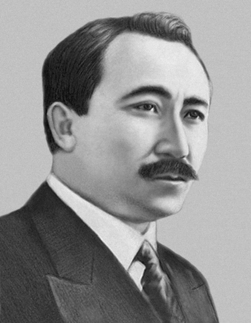
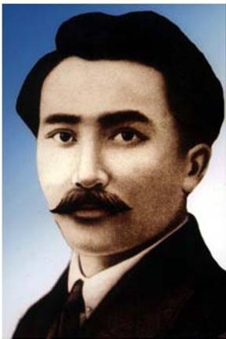

|
Список писателей
О сайте
статистика
| 
Электронная библиотека
|
Сейфуллин Сакен
1894–1938

Родился 15 октября 1894 года в Жанаркинском районе Жезказганской области в семье крестьянина-скотовода. Его стихи: «Наборщик», «Типография», «Сеятель», «На ткацкой фабрике» и другие
Сразу же после окончания гражданской войны Сакен Сейфуллин начал работу над своей знаменитой книгой историко-мемуарным романом «Тернистый путь», в котором показана борьба казахов против царизма. Этот роман в известной степени — и учебник истории, и художественное произведение, воссоздающее действительность бурных лет в Казахстане. Это не свод исторических фактов и сведений, а цельное произведение, в котором исторические события переплетаются с судьбой отдельного человека. Сакен Сейфуллин поднял в своей книге богатейший материал исторических событий.
При его участии вышли в свет сборники «Образцы древней казахской литературы», «Батыры», «Ахан-серы Актокты», казахский вариант поэмы «Лейли и Меджнун». Сакен Сейфуллин стоял у колыбели Союза писателей Казахстана и до конца дней своих оставался одним из его руководителей. Первым их казахских писателей Сакен Сейфуллин был награжден орденом Трудового Красного Знамени.
Уже, начиная с середины 20-х годов, Сакен вел большую педагогическую и научно-исследовательскую работу, читая лекции по казахской литературе. Немало сделал Сакен Сейфуллин для перевода казахских авторов на русский язык, и, наоборот, книг русских писателей на казахский язык. В Казахстане он был неутомимым пропагандистом русской литературы и русской науки.
Жизнь замечательного казахского писателя оборвалась в 25 февраля 1938 года. Сакен Сейфуллин был незаконно репрессирован и расстрелян. Но имя его и творчество не было забыто. В 1958 году честное имя Сакена Сейфуллина было реабилитировано.
|
|